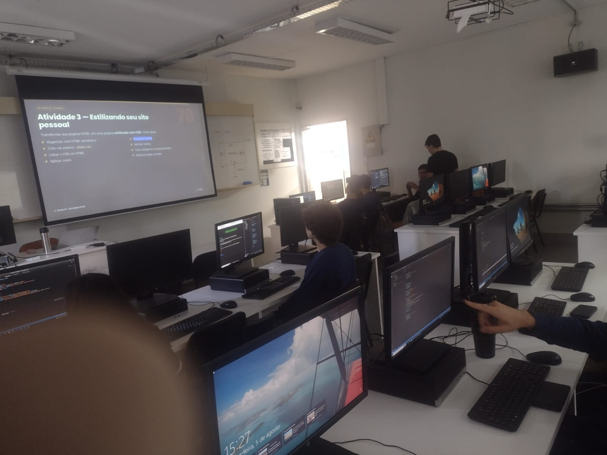
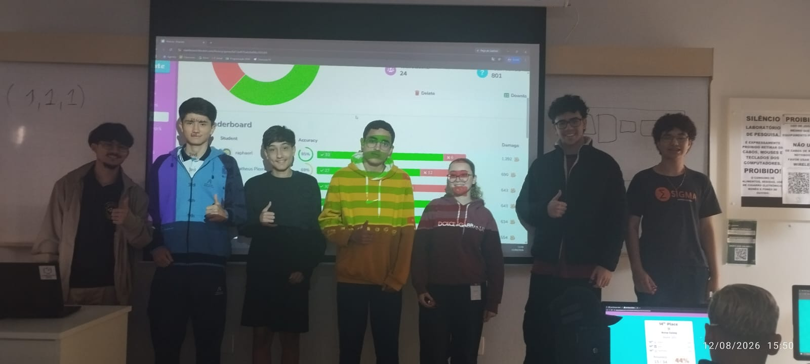
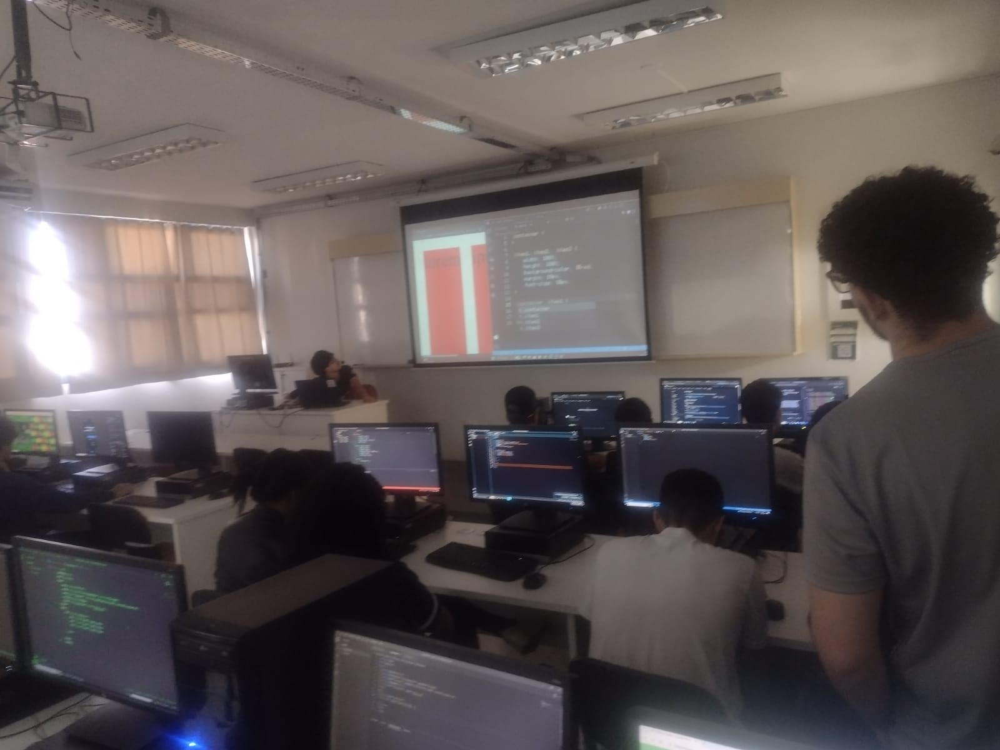
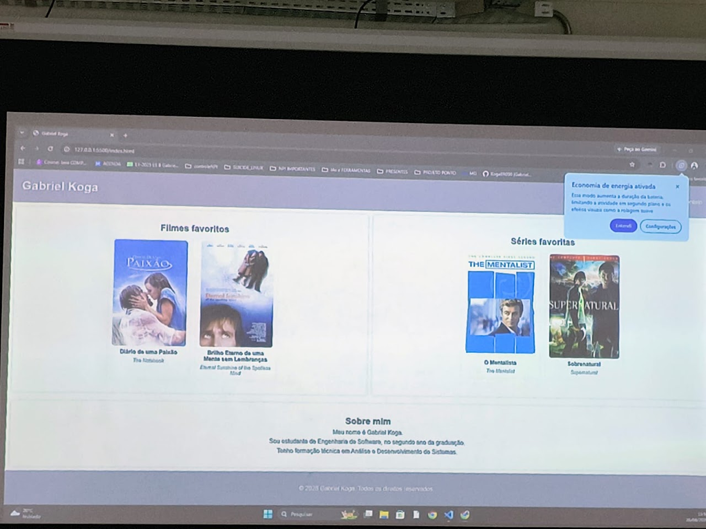
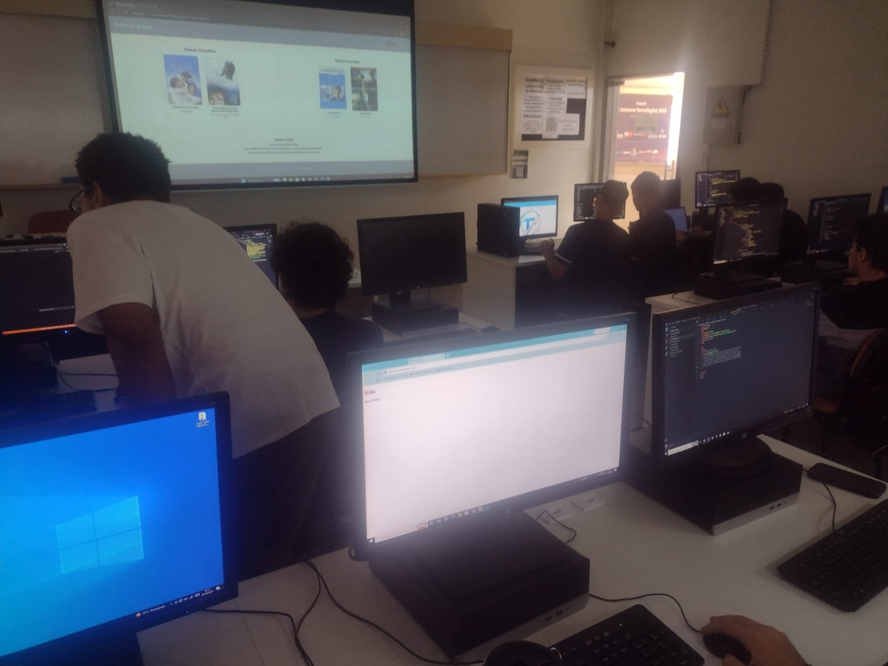
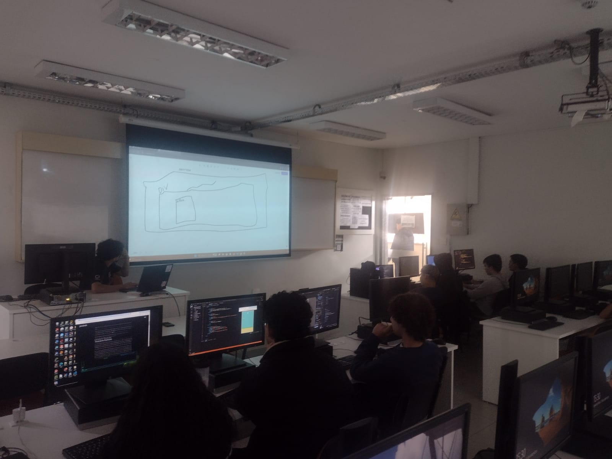
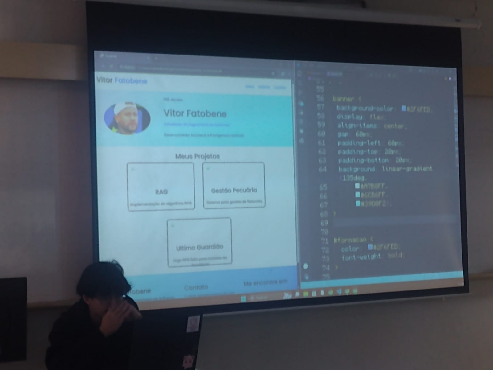
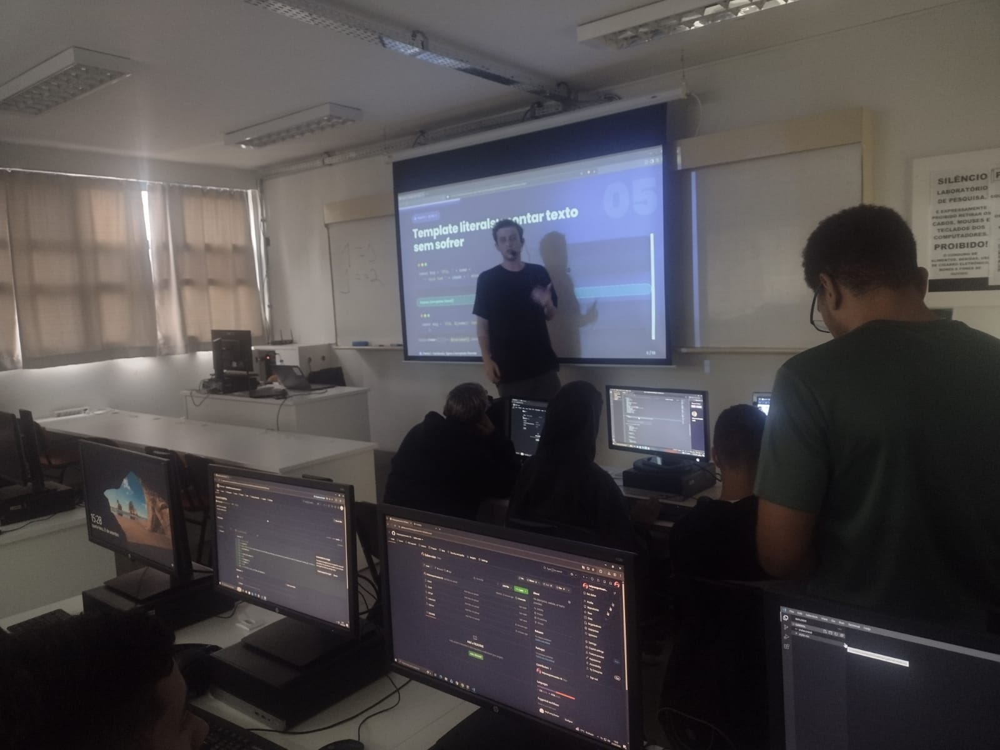

Hoje o Koga teve que dar uma aula em outro lugar, portanto quem deu a aula foi a auxiliar dele Sibelly.
A aula hoje foi exclusivamente sobre CSS, ela mostrou múltiplos atributos para estilização do css, como font-size, font-family, como importar uma fonte para o html e css, margin, width, align-text, entre outros.
No começo da aula ela relembrou os conceitos do css aprendidos na última aula, e depois ela partiu para exemplos práticos dos atributos do css, e continuou assim até o fim da aula, começando com font-family e como importar uma fonte do google fonts, e depois foi apresentando um atributo de cada vez. Eventualmente ela explicou sobre o “c” do css, que significa cascata e que, existem prioridades, sendo id > classe > elemento.
Nessa aula eu ajudei mais os alunos, eles estavam tendo algumas dificuldades com o css, como vírgula, chaves aberta, eu acabei quebrando a cabeça com um deles, por que não estávamos conseguindo colocar a fonte no html dele de jeito nenhum, até que eu percebi que ele simplesmente esqueceu de linkar o css no html, e por isso não ia.
Um problema que eu percebi é que os alunos não são bons com o html semântico, 0 indentações corretas no código, apenas aquelas que o próprio html faz quando é gerado com o ! no vscode.

A aula de hoje foi sobre Flexbox no CSS.
O Koga queria começar a aula dando uma revisão sobre os conteúdos do CSS que foram dados na última aula pela Sibelly, entretanto quando ele viu que ia demorar muito ele decidiu parar e seguir com o conteúdo.
A aula inteira foi sobre Flexbox, primeiro ele explicou como era feito uma centralização de divs antes do flexbox, e depois sobre como a flexbox facilita a centralização de divs.
Para demonstrar o funcionamento da flexbox o Koga criou uma div com 3 spans dentro, a div recebeu a classe .container, e foi nela que a maioria dos atributos foram testados.
Ele falou sobre flex-direction, que alterna o eixo principal, justify-content, que serve para modificar no eixo principal, align-content que seria o eixo secundário, ele também mostrou o comportamento de spans que tem tamanhos diferentes.
No final da aula, o professor instruiu os alunos a jogarem Flexbox Froggy para treinar o conteúdo que foi passado na aula e, depois, ele abriu uma sala no blooket para competirem valendo chocolate.

No começo da aula o Koga propôs que os alunos da turma do Fatobene iriam juntar com a dele e, fariam uma competição para saber qual turma é a melhor, portanto, colocou todos os alunos no lado direito da sala, para que a turma do Fatobene coubesse no outro.
Como iria ter a disputa, o Koga começou revisando o conteúdo de flexbox da aula passada, lembrando da utilidade do flexbox, como o justify-content, align-content e align-items funcionam.
Depois ele entrou com conteúdo novo, sendo flex-flow, que simplifica dois atributos, flex-grow, flex-shrink e flex-basis, que determinam se a div aumenta, diminui, e também seu tamanho base, em um caso onde a página recebe zoom, e também o flex, que engloba os três.
Como não houve a disputa com a outra sala, e o Koga também não gostou da atividade proposta pelos slides, ele decidiu passar um blooket com o conteúdo da aula para os alunos testarem seus conhecimentos.

Para a aula de hoje o Koga propôs uma atividade aos alunos em que eles deveriam fazer uma página simples no HTML com tudo que aprenderam nas aulas.
Para explicar a atividade o professor mostrou uma página que ele havia feito onde tinham dois filmes e duas séries preferidas dele, e uma outra página html com informações para contato, e a ideia era que os alunos fizessem qualquer coisa, sendo aquilo apenas um exemplo.
Um dos alunos na minha fileira decidiu seguir o exemplo do Koga, e o outro decidiu fazer sobre jogadores e times de futebol.
Uma coisa que eu percebi foi que um deles usava o html semântico e indentação perfeitos, diferente do outro que utilizou várias divs e o código estava bem mal indentado.
Teve um problema, onde durante um pouco menos da metade da aula os computadores estavam sem internet, o que gerou uma impossibilidade de colocar imagens no site, porém a internet voltou tempo o suficiente para que pudessem salvar o progresso no github, visto que depois da aula ela acabou.

A aula de hoje serviu como continuação da atividade passada na aula anterior.
Os alunos pegaram o site que desenvolveram na aula anterior, e os que não haviam terminado deram continuidade.
Novamente ajudei os alunos, principalmente com o css, com erros bobos e para fazer alguns ajustes no site, eles não passam mais tanta dificuldade no html, porém ainda não dominam o css.

Nessa aula o Koga realizou uma revisão para a atividade proposta para a próxima aula.
No começo da aula o professor relembrou os alunos sobre a TechFil, que eles também podem participar, e depois apresentou um site que o Vitor Fatobene fez, a aula foi basicamente sobre a estrutura deste site, e o Koga explicando como ele funcionava, dando ênfase nas múltiplas flexbox presentes no site, porque estavam lá, e o que faziam.
A princípio a aula seria utilizada para que os alunos fizessem um site utilizando os conceitos que foram aprendidos e também os que estavam aplicados no exemplo que o Fatobene fez, entretanto a pedido dos alunos, o Koga começou a explicar o código, e eventualmente gastou a aula inteira para isso, deixando a atividade para a próxima semana.

A aula de hoje foi utilizada para fazer a atividade da semana passada.
O Koga começou a aula oferecendo uma breve revisão sobre o código, igual na aula passada, enquanto os alunos faziam a atividade.
Os alunos já se acostumaram a utilizar a flexbox e o css, entretanto um deles perguntou o que era html semântico, assunto que o professor deu bastante ênfase no começo das aulas.
Percebi que os alunos tendem a esquecer algumas coisas gerais, como para que serve flex-direction, border, height, width, mas deve ser porque as aulas são semanais.
Também teve uma menina que não usava um style.css, ela tinha feito o css dentro do próprio html, achei isso um tanto interessante, até porque não foi ensinado como fazer isso nas aulas.

A aula de hoje deu início ao conteúdo de JavaScript.
No começo da aula a turma do Koga juntou com a turma do Fatobene (D), e aparentemente a ideia era fazer um kahoot no final para ver qual turma era a melhor, entretanto não houve tempo o suficiente para isso.
A maior parte da aula foi utilizada para os alunos finalizarem a atividade das aulas anteriores, e só nos últimos 20 minutos eles decidiram entrar no conteúdo de JavaScript.
O Fatobene deu a aula sobre JavaScript, e foi basicamente introdução das variáveis, ele explicou para que servem, como ser instanciadas e como podem ser usadas.
Para utilizar o JavaScript os alunos foram nos navegadores e utilizaram o console do inspecionar, o que permitiu instanciar variáveis e utilizar o console.log() para ver essas variáveis.
Os alunos que monitorei já haviam terminado a atividade, e não tiveram muita dificuldade no JavaScript, exceto por um, que tentou instanciar uma variável de nome como “const(“Ryan”)”, mas depois que eu expliquei como era ele pegou o jeito.